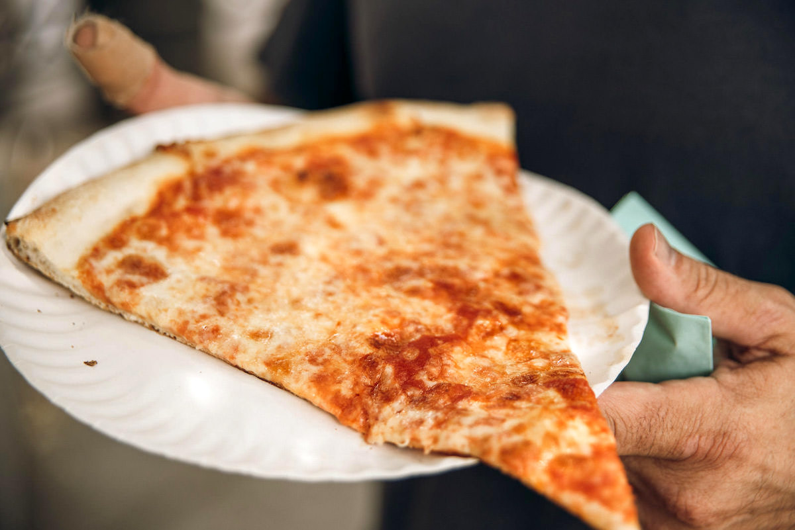
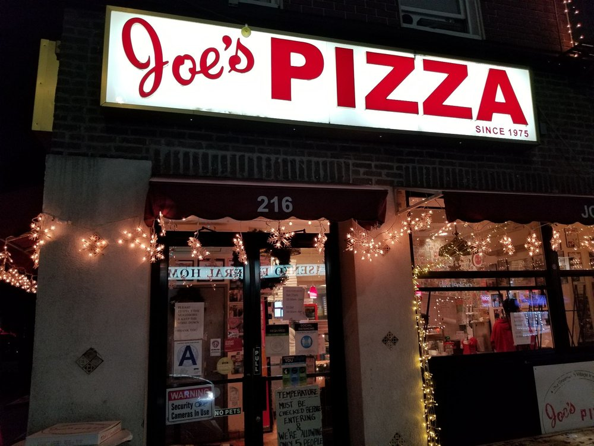
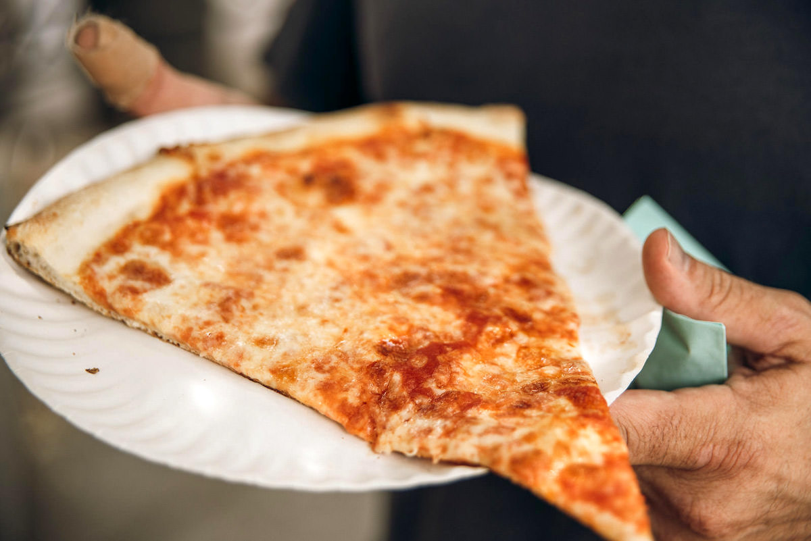
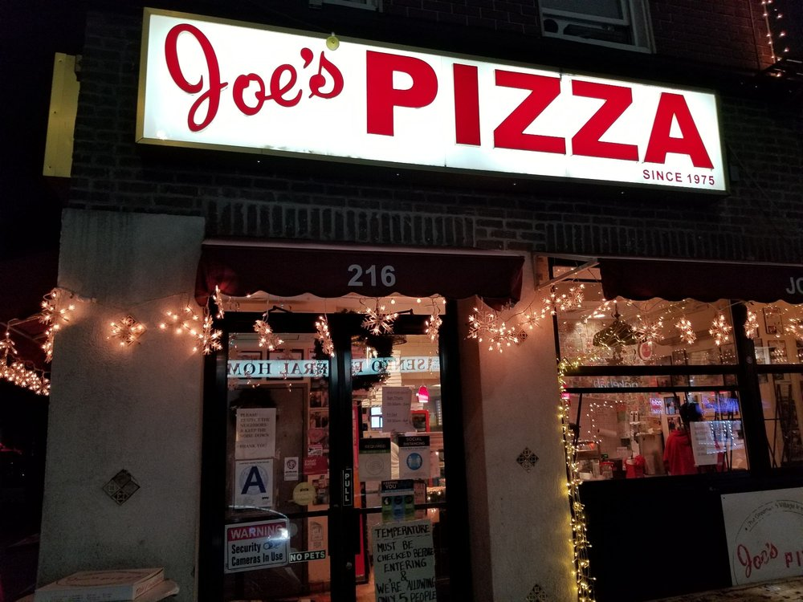
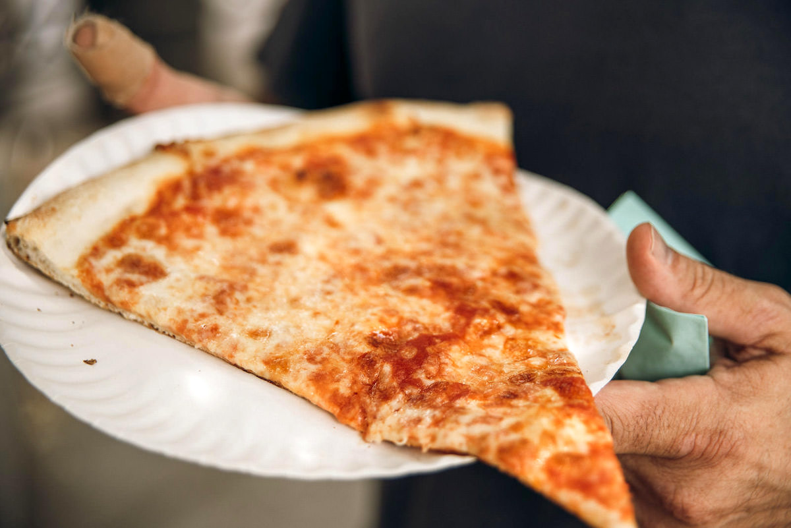
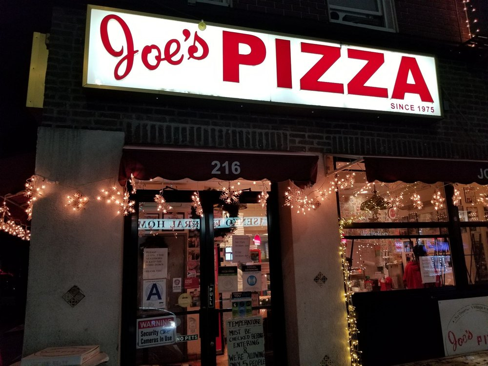

Here you'll find all the places to satisfy your various food cravings
If you want it, NYC's got it!
New York City is a city not known for a singular dish but rather a vast assortment of dishes ranging from Mexican to Japanese food.
While its very hard to go wrong when picking an option to eat in the big apple, here are some reccomendations!
Starting off strong, we have one of if not the most iconic pizza place in the city: Joe's. Since it's appearance in
Spider-man 2, its gained popularity at a steady rate but if it weren't for its famous slice, it would certainly not be as popular as it is today.


Next up we have Lombardi's, another staple of Italian food. Since it first opened in 1905, the restaurant has continously
proven itself to be worthy of the praise it recieves.
Finally, as the last place to eat we have Waverly Restaurant. This old-school establishment is open 24 hours a day and offers
neat vintage dishes
 


